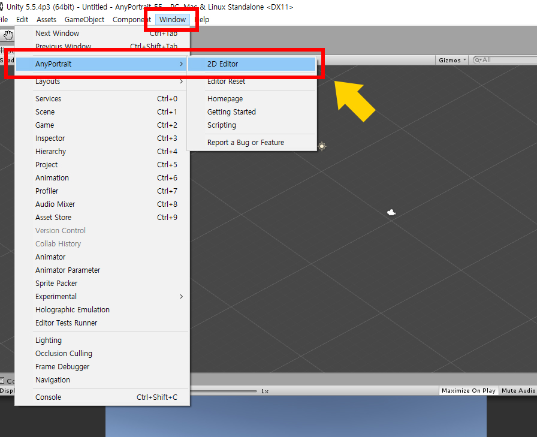

AnyPortrait > 入門ガイド > 1.1. AnyPortraitの起動とapPortraitの作成
1.1. AnyPortraitの起動とapPortraitの作成
1.2.4
Unity Asset Storeから「AnyPortrait」をダウンロードしてインストールしてください。
Unity 5.5以降で利用可能です。

パッケージをインストールした場合は、トップメニューの「Window > AnyPortrait」が表示されます。
「Window > AnyPortrait > 2D Editor」をクリックしてエディタを起動します。

AnyPortraitが実行される最初の画面です。
1. Workspace：メインのタスクがエディタで処理される場所です。 マウスホイールをスクロールするか、ホイールボタンをクリックして、フォーカスを移動してズームできます。
2. apPortrait Object：現在編集されているapPortraitオブジェクト。 ここでは、apPortraitを置き換えて選択することができます。
3. Make New Portrait：apPortraitを作成します。
4. Refresh to Load：シーンに存在するapPortraitのリストをリフレッシュします。 リフレッシュ後、ボタンの下部に開くことができるオブジェクトが表示されます。
5. Load Backup File：バックアップファイルを開き、新しいapPortraitを作成します。

"Make New Portrait"ボタンを押して新しいapPortraitオブジェクトを作成します。
ダイアログボックスに名前を入力します。


apPortraitを作成すると、画面の左上のUIが変わります。 各機能は次のとおりです。
1. ワークスペース : これは主要な作業が行われる場所です。 ズーム（ マウスホイールをスクロール ）と移動（ マウスホイールボタンをドラッグ ）することができます。
2. 設定, Bake ボタン : apPortraitとエディタの設定を変更したり、エクスポートしたりするためのダイアログを開きます。
Q、W、E、Rです。
4. Onion Skin、Bone、Physics 表示ボタン : Onion Skin、Bones、Physical Effectsを画面に表示するかどうかを指定します。 オニオンスキンのショートカットは O で、Boneのショートカットは B です。
5. Hierarchy、Controllerタブ : 左側のUIのタブ。 「Hierarchy」を押すと、作業中のオブジェクトが表示されます。 「Controller」を押すと、登録されたコントロールパラメーターが表示されます。
6. Hierarchy : これは、「Hierarchy」が選択されたときに表示されるUIです。 オブジェクトはタイプで表示され、上部にあるフィルタボタンを使用すると、特定のタイプのオブジェクトのみを表示できます。
7. 詳細UI : 右UIは、選択されたオブジェクトの情報が出力される領域である。 選択したオブジェクトに応じて、最大3つのゾーンに分割することができます。
8. ワークスペースの最大化 : 左右のUIを非表示にして、ワークスペースを大幅に増やします。 ショートカットは Alt+W です。
9. ズーム : 画面のズームを指定します。 マウスホイール を使用して制御することもできます。
10. GUIリセット : 画面のスクロールとズームをリセットします。

「設定」ボタンを押すと、上記のダイアログボックスが表示されます。
ここでは、apPortraitの名前を変更したり、エディタの言語と色を変更することができます。
1. Portraitタブ : 現在編集中のapPortraitの設定。
- Name : 選択したapPortraitの名前を編集します。
- Important / FPS : 「Important」がオンの場合、フレームごとに更新されます。 （FPSは無視されます）逆に、「Important」がオフの場合、パフォーマンスを向上させるために、指定された「FPS」に更新されます。 オブジェクトがゲームで重要でない場合は、「重要」をオフにすることをお勧めします。
2. Editorタブ : エディタの設定。
- Language : エディタの言語がサポートされています。 リリースバージョンに基づいて「英語、韓国語、フランス語、ドイツ語、スペイン語、デンマーク語、日本語、中国語（繁体/簡体字）」をサポートします。
- Show FPS / Statistics : エディタのFPSと現在のワークスペースデータを表示します。
- Auto Backup Setting : 自動バックアップの設定。 保存時間とパスを指定できます。
- Pose Snapshot Setting : アニメーションを編集するときに、骨の姿勢を保存することができます。 これは、セーブファイルのパスです。
- Editor Colors : エディタのGUIカラーの設定。 デフォルトボタンを押すと、それぞれのデフォルト値に戻ることができます。
3. Aboutタブ : AnyPortraitのライセンスとエディタで使用する外部ライブラリを指定します。

「Bake」ボタンを押すと、上記のダイアログボックスが表示されます。
この関数は、AnyPortraitエディターからシーンに結果をエクスポートするために使用されます。
1. Portrait : これはベーキングターゲットとしてのapPortraitです。
2. Bake Scale : シーンに適用されるサイズの比率。 シーンとAnyPortraitの座標系は異なるため、適切にスケーリングする必要があります。
3. Z Per Depth : 各メッシュのZ距離を設定します。 （値が小さすぎるとデプスファイティングの問題が発生する可能性があります）。
4. Bake : シーンにエクスポートして適用します。
5. Optimized Baking Target : これは最適化されたBakeのターゲットです。
6. Optimized Bake : 実行データのみを焼き、最適化されたオブジェクトをコピーして書き出します。 新しいターゲットが存在しない場合は作成します。